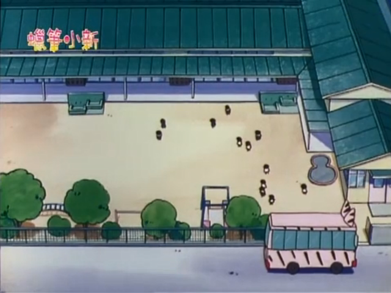
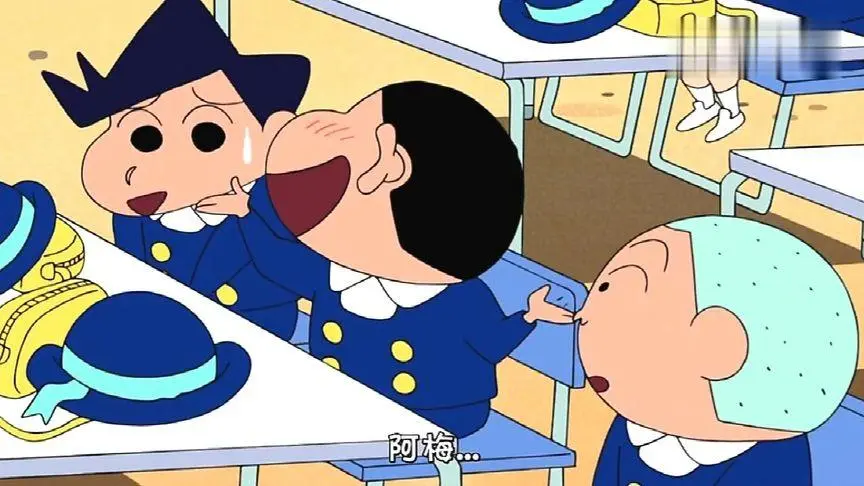
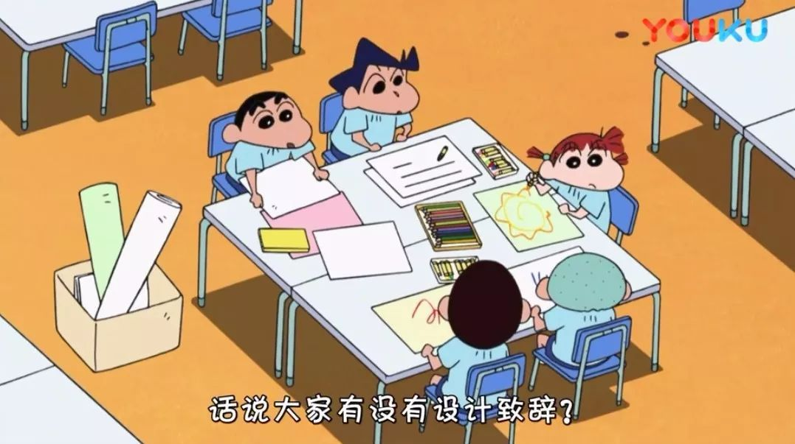

|  |
|  | 双叶幼稚园是日本知名漫画作品《蜡笔小新》及其衍生作品中虚构的一所幼稚园，园长为高仓文太，向日葵班老师为吉永绿，玫瑰班老师为松坂梅，樱花班老师为上尾真澄，是该作品主人公野原新之助及其好友风间彻、樱田妮妮、佐藤正男、阿呆所就读的幼稚园。作品中经常以该幼稚园为背景，野原新之助及他的老师、好友们发生了许多有趣的校园故事 |
|  | 小新在双叶幼稚园认识了许多好朋友：风间彻，樱田妮妮，佐藤正男，阿呆，酢乙女爱，河村豹，等等。 | 上课的形式新颖，活动丰富。充分地激发了学生的创造力，小新也在双叶幼稚园里为我们制造了数不尽的笑点。 |